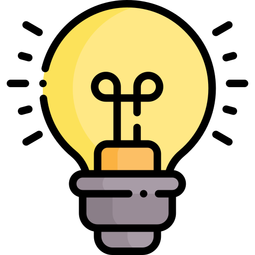
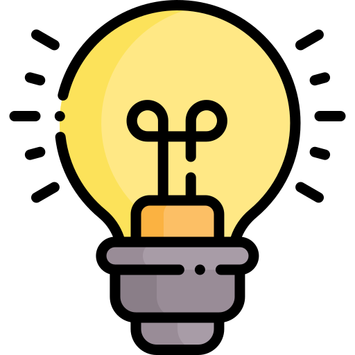

¿Qué Ofrecemos?
Formación docente de calidad, enfocada en el desarrollo integral de futuros profesionales en la educación. Contamos con un equipo de docentes altamente capacitados y un entorno de aprendizaje dinámico y participativo.
"Creemos en la educación como el motor del cambio. Formamos docentes con pasión, compromiso y habilidades innovadoras para construir un futuro mejor en el aula y en la sociedad."
Educación con valores
Formamos estudiantes con principios éticos y compromiso social, fomentando el respeto, la solidaridad y la responsabilidad
Formación práctica
Aprendizaje basado en la experiencia, con actividades y proyectos que preparan a los estudiantes para el mundo real.

Titulo oficial
Título reconocido que garantizan una educación de calidad y abren puertas a nuevas oportunidades académicas y laborales.

 

Conocé más sobre los Profesorados
Descubre la carrera que marcará tu camino.

Pedagogia Problemáticas Socioantropólogicas Práctica Docente I Matemática I Fisica I Química Educación Tecnológica Historia de la Tecnologia Lectura y Escritura Académica Formación Cristiana
Psicologia y Educación Didáctica General Lenguaje Digital y Audiovisual Practica Docente II Matemática II Didáctica de la Educ. Tecnológica I Sistemas de Representación y Comunicación Materiales Física II Sujetos de la Educación
Filosofia y Educación Práctica Docente III y Residencia Investigación e Innovación Tec. Politicas Económicas y Desarrollo Tecnológico Inglés Técnico Didáctica de la Educación Tecnológica II Sistemas Tecnológicos Tecnologias Educativas Ciencia, Tecnología, Sociedad y Ambiente
Ética y Construcción de Ciudadanía Práctica Docente IV y Residencia Tecnol. de la Producción Industrial Tecnol. de la Producción Agropecuaria Tecnol. de la Información y Comunicación Tecnologias de Gestión Biotecnologia Aula Taller de Educ. Tecnológica Educación Sexual Integral Doctrina Social
Pedagogia Problemáticas Socioantropólogicas en la Educación Psicologia y Educación Argentina en el Mundo Contemporáneo Lenguaje Digital y Audiovisual Lenguaje Corporal Práctica Docente I Desarrollo del Pensamiento Matemático Oralidad, Lectura y Escritura Formación Cristiana
Filosofia y Educación Didáctica General Lenguaje Artístico y Expresivo Matemática y su Didáctica I Lenguaje y su Didáctica Ciencias Naturales y su Didáctica I Ciencias Sociales y su Didáctica I Sujeto de la Educación y Conviviencia Escolar Práctica Docente II
Historia y Pólitica de la Educ. Argentina Práctica Docente III Matemática y su Didáctica II Literatura en el Nivel Primario Alfabetización Inicial Ciencias Naturales y su Didáctica II Ciencias Sociales y su Didáctica II Taller de Ciencia en la Escuela Educación Artística y Expresiva TIC y la Enseñanza en el Nivel Primario
Ética y Construcción de Ciudadanía Práctica Docente IV y Residencia Problemáticas y Desafíos del Nivel Primario Educación Física en el Nivel Primario Educación Sexual Integral Trabajo de Campo
¡Tu futuro empieza hoy!
Inscribite y construí tú carrera
Contacto
Para Inscripciones
Requisitos:
-
Original y copia del Certificado o Título Secundario -
Documentos de identidad -
Dos Fotos 4x4 color -
Certificado Buena Salud C.U.S -
Una carpeta colgante de archivo -
Fotocopia de partida de nacimiento